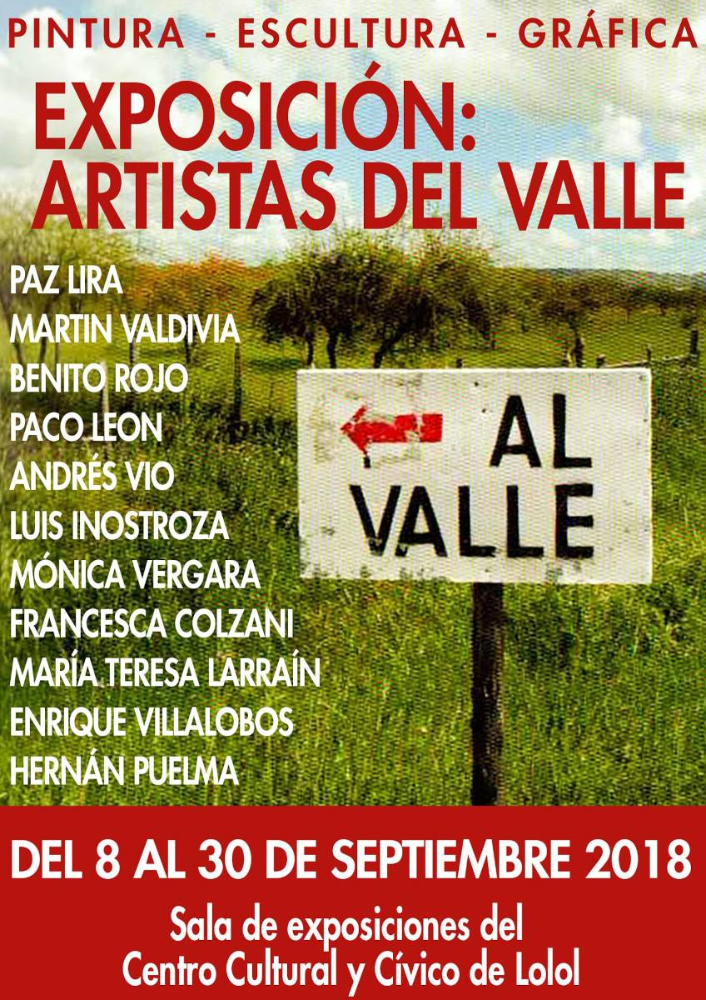
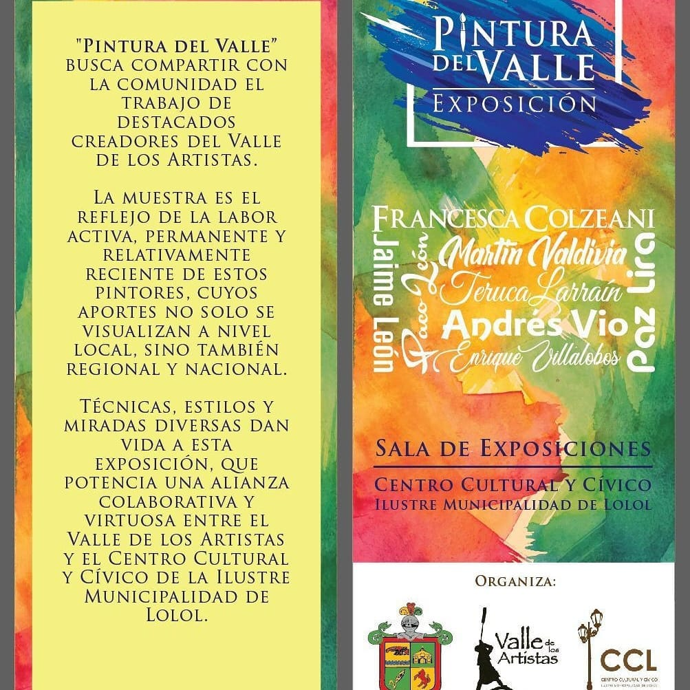
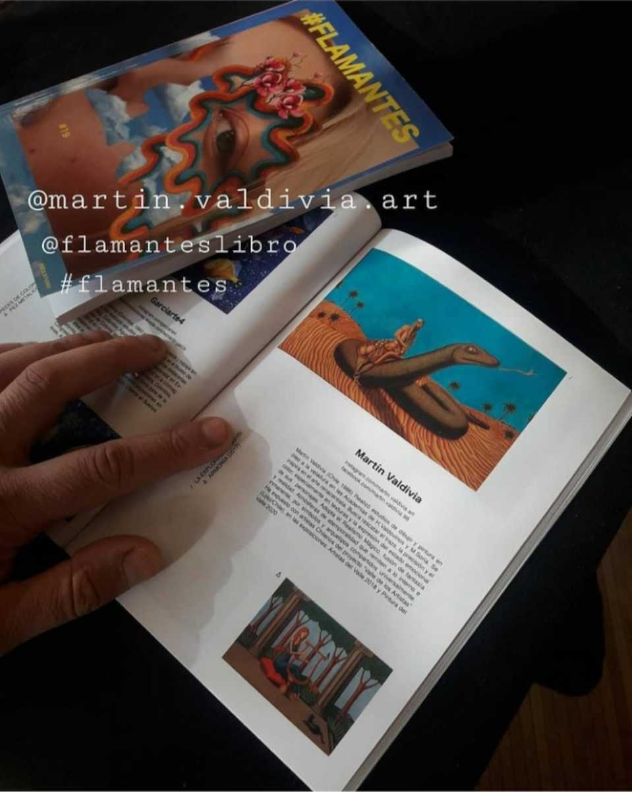
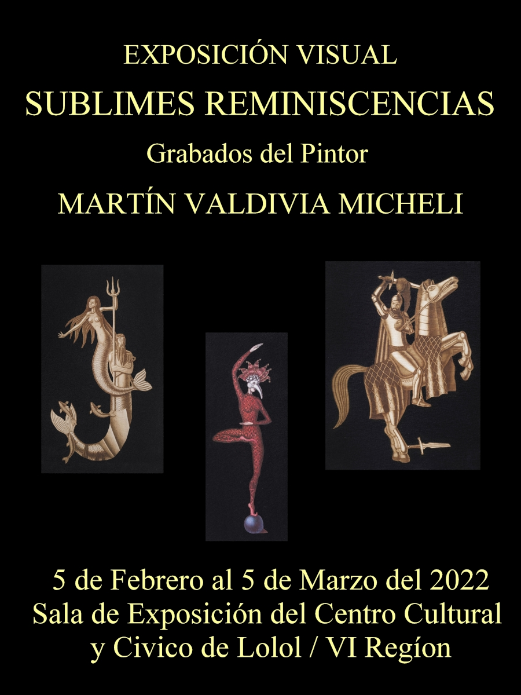

- EXPOSICION: ARTISTAS DEL VALLE 2018. Exposición colectiva realizada junto a los artistas de la comunidad del “Valle de Los Artistas”, expuesta desde el 8 al 30 de septiembre de 2018 en la Sala de Exposición del Centro Cultural y Cívico de Lolo (VI región).

- PINTURA DEL VALLE-EXPOSICION 2020. Exposición colectiva realizada junto a los artistas de la comunidad del “Valle de Los Artistas”, expuesta desde el 15 de Febrero al 15 de marzo de 2020 en la Sala de Exposición del Centro Cultural y Cívico de Lolo (VI región).

- LIBRO FLAMANTES (19 edición). En 2020 postula y es elegido entre miles de jóvenes artistas del mundo hispano-hablante para ser parte de la 19 versión del Libro FLAMANTES (Organización Española dedicada a la promoción y difusión de jóvenes artistas, a través de la publicación de 2 de sus obras en su libro físico FLAMANTES, el cual es entregado en 300 galerías españolas, además de ser promocionados por internet y en sus redes sociales).

- TIEMPOS DE PANDEMIA, TIEMPOS DE CULTURA 2020. En noviembre de 2020 es invitado por el Centro Cultural y Cívico de Lolol para ser parte de su programación online con el objetivo de dar a conocer la riqueza cultural de la VI región a través de 21 cápsulas/entrevistas a artistas, artesanos y cultores a nivel local y regional. (Ver entrevista en sección "VIDEOS" de este sitio web o en “youtube" ("Taller adentro: pintor Martin Valdivia"))
- SUBLIMES REMINICENSIAS-EXPOCISION 2022. En noviembre de 2020 es invitado por el Centro Cultural y Cívico de Lolol para ser parte de su programación online con el objetivo de dar a conocer la riqueza cultural de la VI región a través de 21 cápsulas/entrevistas a artistas, artesanos y cultores a nivel local y regional. (Ver entrevista en “youtube”, “Taller adentro: pintor Martin Valdivia”).
